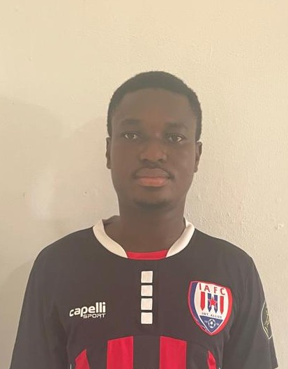

Home
About me
My name is Albert Antwi, and I am from Accra, Ghana. I am currently a student in the BYU-Pathway program, where I am working to improve my education and develop valuable skills for the future. I have a strong interest in technology and enjoy learning how computers and websites work. I am especially interested in web development and designing websites that help businesses and people share information online. I enjoy learning new things and challenging myself to grow both personally and professionally. Through my studies, I am gaining knowledge that will help me build a successful career in the technology field. I believe education and technology can create many opportunities for people and communities. I am grateful to be part of the BYU-Pathway program because it is helping me develop the skills and confidence I need for my future. I look forward to continuing my learning journey and using my knowledge to make a positive impact in my community.
Student Photo

Web Certificate Courses
The total number of courses listed above is 0.
To earn your Certificate, you need an additional 0 credits from the above courses.